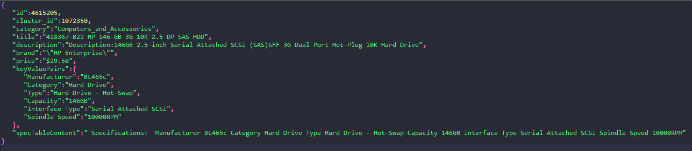
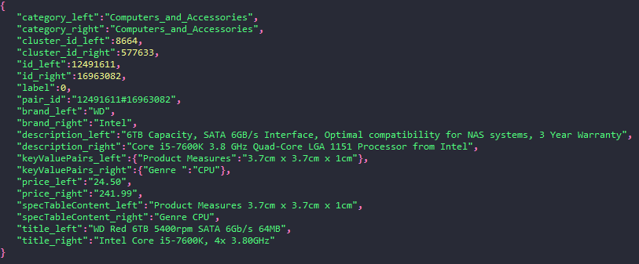
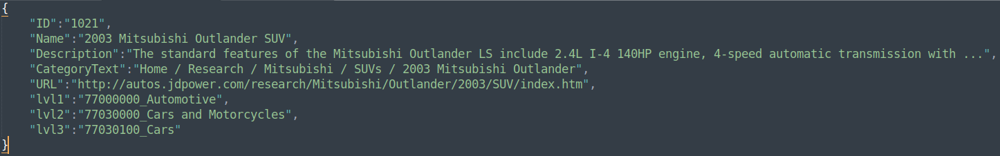
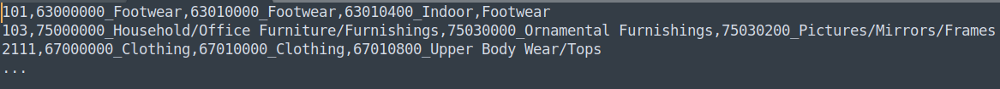

Mining the Web of HTML-embedded Product Data
Semantic Web Challenge @

News
- Winners of each task will be awarded 500 euro! (Partly sponsored by Peak Indicators)
- 16 April 2020: We have released some example code for building your own training sets for the product matching task.
- 27 March 2020: Due to Covid-19, ISWC2020 has decided to go virtual. The same will apply to our event. The challenge will take place as planned and the schedule will stay unchanged. So please already start experimenting with the training and validation data, so that you are prepared for the release of the test set on 1 June.
- 16 March 2020: the training and validation sets for both tasks have been released. Please scroll down to the dataset section of each task for details. You can now start testing your systems!
- 02 March 2020: the first Call for Participation has beeen annouced. The Google discussion group is also open. Please join the discussion if you wish to take part in this event!
Overview
Recent years have seen significant use of semantic annotations in the e-commerce domain, where online shops (e-shops) are increasingly adopting semantic markup languages to describe their products in order to improve their visibility. Statistics from the Web Data Commons project show that 37% of the websites covered by a large web crawl provide semantic annotations. 849,000 of these websites annotate product data using the schema.org classes product and offer. However, fully utilising such a gigantic data source still faces significant challenges. This is because the adoption of semantic markup practice has been generally shallow and to a certain extent inconsistent. For example, less than 10% of product instances are annotated with a category; categorisation systems used by different e-shops are highly inconsistent; the same products are offered on different websites, often presenting complementary and sometimes even conflicting information.
Addressing these challenges requires an orchestra of semantic technologies tailored to the product domain, such as product classification, product offer matching, and product taxonomy matching. Such tasks are also crucial elements for the construction of product knowledge graphs, which are used by large, cross-sectoral e-commerce vendors.
This challenge aims to benchmark methods and systems dealing with two fundamental tasks in e-commerce data integration: (1) product matching (task one) and (2) product classification (task two) . We develop datasets and resources to share with the community, in order to encourage and facilitate research in these directions. Participating teams may choose to take part in either, or both tasks. Teams successfully beating the baseline of the respective task, will be invited to write a paper describing their method and system and present the method as a poster (and potentially also a short talk) at the ISWC2020 conference. Winners of each task will also be awarded 500 euro. This is partly sponsored by Peak Indicators
This challenge is organised by the University of Sheffield, the University of Mannheim, and Amazon.
Important Dates
| Date | Milestone |
|---|---|
| 02 March 2020 | Google support group open. Please join the group here if you wish to take part in this event |
| 16 March 2020 | Release of the training and validation sets |
| 01 June 2020 | Release of the test set (without ground truth) |
| 15 June 2020 | Submission of system output |
| 08 July 2020 | Publication of system results |
| 08 July 2020 | Notification of Acceptance for Presentation |
| TBD | Deadline for submitting the system description paper |
| TBD | Presentation at the ISWC conference |
Task One - Product Matching
Product matching deals with identifying product offers deriving from different websites that refer to the same real-world product. In this task, product matching is handled as a binary classification problem: given two product offers decide if they describe the same product (matching) or not (non-matching).
Background information
Product offers are published on the web together with some textual descriptions and are often accompanied by specification tables, i.e. HTML tables that contain specifications about the offer such as price or the country of origin. The syntactic, structural and semantic heterogeneity among the offers makes product matching a challenging task.
The Web Data Commons project has released in 2018 the WDC Product Data Corpus, the largest publicly available product data corpus originating from e-shops on the Web. The corpus consists of 26 million product offers originating from 70 thousand different e-shops. Exploiting the weak supervision found on the web in the form of product identifiers, such as GTINs or MPNs, product offers are grouped into 16 million clusters. The clusters can be used to derive training sets containing matching and non-matching pairs of offers. The derived sets can in turn be used to train the actual matching methods.
Data format
We offer the product data corpus in JSON format. Offers having the same cluster ID attribute are considered to describe the same real-world product while different cluster IDs signify different products. The grouping of offers into clusters is subject to some degree of noise (approx. 7%) as it has been constructed using a heuristic to cleanse the product identifiers, such as GTINs and MPNs, found on the Web. Every JSON object describing an offer has the following JSON properties:
- id: Unique identifier of an offer (random integer)
- cluster_id: The heuristically assigned identifier of the cluster to which an offer belongs
- category: One of 25 product categories the product was assigned to
- title: The product offer title
- description: The product offer description
- brand: The product offer brand
- price: The product offer price
- specTableContent: The specification table content found on the website of the product offer as one string
- keyValuePairs: The key-value pairs that were extracted from the specification tables.
The following example shows what a product offer looks like in JSON format:
We also offer an example of a training set that we derived from the corpus. The training set contains pairs of matching and non-matching offers from the category computer products. You can use this example set for training your matchers. The example training set contains 68K offer pairs from 772 distinct products (clusters of offers). These products will only partly overlap with the products in the test set that we will release in June. We thus suggest that participating teams construct their own training sets from the corpus having higher coverage of distinct products. Every JSON object in the training set describes a pair of offers (left offer - right offer) using the offer attributes listed above together with their corresponding matching label.
The following example shows what a product offer pair looks like in JSON format:
The validation and test sets will be released in CSV format. Each dataset will contain pairs of offer ids and the label ‘True’ for matching pairs and ‘False’ for non-matching pairs. Both sets are constructed from offer pairs from the category Computers and Accessories. All pairs of offers in the validation and test sets are manually labeled. Using the example training set to train deepmatcher, a state-of-the-art matching method, achieves 90.8% F1 on the validation set. However, the test set of this challenge will be more difficult as (amongst other challenges) it will contain offers from clusters (products) that are not contained either in the training set or in the validation set.
Additional information about the assembly of the example training set, the validation set, as well as the results of baseline experiments using both artefacts are found here.
Data download
- Product Data Corpus (~16M offers)
- Example training Set (~68K offer pairs)
- Validation Set (1.1K offer pairs)
- Test set (600 offer pairs): available by 01 June 2020
Evaluation metric
Precision, Recall and F1 score on the positive class (matching) will be calculated. The F1 score on the positive class (matching) will be used to rank the participating systems.
Tools
Use your favourite JSON parser to parse the datasets. We suggest using the Python pandas package to parse each file into a dataframe:
import pandas as pd
df = pd.read_json(filename, lines=True)Task Two - Product Classification
Product classification deals with assigning predefined product category labels to product instances (e.g., iPhone X is a ‘SmartPhone’, and also ‘Electronics’). In this task, we will be using the top 3 classification levels of the GS1 Global Product Classification scheme to classify product instances.
Background information
Same products are often sold on different websites, which generally organise their products into certain categorisation systems. However, such product categorisations differ significantly for different websites, even if they sell similar product ranges. This makes it difficult for product information integration services to collect and organise product offers on the Web.
An increasing number of studies have been carried out for automated product classification based on the product offer information made available on the Web. Initiatives such as the Rakuten Data Challenge were also created to develop benchmarks for such tasks. However, the majority of such datasets have been created based on a single source of website, and using a flat classification structure.
The Web Data Commons project released in 2014 the first product classification dataset collected from multiple websites, annotated with three levels of classification labels. This dataset has been extended and is now used for the product classification task in this challenge.
Data format
Data are provided in JSON, with each line describing one product instance using the following schema. Each product will have three classification labels, corresponding to the three GS1 GPC classification levels.
- ID: an arbitrary ID of the product
- Name: the name of the product (an empty string if unavailable)
- Description: the description of the product (truncated to a maximum of 5,000 characters. Can be an empty string if unavailable)
- CategoryText: website-specific product category, or breadcrum (an empty string if unavailable)
- URL: the original webpage URL of the product
- lvl1: the level 1 GS1 GPC classification (i.e., classification target)
- lvl2: the level 2 GS1 GPC classification (i.e., classification target)
- lvl3: the level 3 GS1 GPC classification (i.e., classification target)
An example screenshot (formatted as 'pretty-print') is shown below.
Data download
- Training set (contains approx. 10k instances)
- Validation set (contains approx. 3k instances)
- Test set: available by 01 June 2020 (contains approx. 3k instances)
Evaluation metric
For each classification level, the standard Precision, Recall and F1 will be used and a Weighted-Average macro-F1 will be calculated over all classes. Then the average of the WAF1 of the three levels will be calculated and used to rank the participating systems.
A basline is developed to support participants. This is the same as that used in the Rakuten Data Challenge. Implementation of this baselin is available in our GitHub repository (see below). Details of the baseline:
- Based on the FastText algorithm
- Uses only product titles/names, which are all lowercased and lemmatised (using NLTK)
- Does not use pre-trained word embeddings
An overview of the performance of the baseline and its variants on the validation set are shown below for reference (note that only the figures marked in yellow are used for comparison with participating systems). Details (including P, R, F1 for each level of classification) of these results can be found here
| Model | Weighted Avg. P, R, F1 | Macro Avg. P, R, F1 | ||||
|---|---|---|---|---|---|---|
| Baseline | 85.490 | 84.054 | 84.127 | 65.216 | 59.964 | 60.622 |
| Baseline + word embeddings (CBOW, see below) | 86.252 | 85.805 | 85.502 | 69.803 | 63.007 | 64.633 |
| Baseline + word embeddings (Skipgram, see below) | 85.137 | 84.663 | 84.282 | 69.798 | 61.953 | 63.899 |
Tools
Our GitHub website is currently being updated and will be ready by 16 March 2016. It will provide code for:
- Parsing the input datasets
- Scoring the output prepared in the required format (see the Submission section for details)
- Baseline, which is a FastText implementation same as that in the Rakuten Data Challenge
Details can be found on the corresponding GitHub page.
Other Resources
Participants are free to decide if they would like to use any of these resources to support their development
To support the development of systems we have created language resources that may be useful for both tasks. We processed the 2017 November WDC crawl of all entities that are an instance of http://schema.org/Product or http://schema.org/Offer, and indexed the products (English only) using Solr 7.3.0. We then exported the descriptions (if available) of these products and used the data (some heuristic-based filtering is applied, resulting in over 150 million products) to train word embeddings using the Gensim implementation of Word2Vec. We share the following resources that can be used by participants:
- The text corpus containing the above product descriptions (11GB)
- The word embeddings trained using the above corpus (lowercased). Both continuous bag-of-words and skipgram models are available, and are trained using Gensim 3.4.0. Available in the following two formats:
- Gensim format. This is optimised for speedy loading of the model and is also more memory-efficient. Use the code
to load the model.gensim.models.KeyedVectors.load([embedding_file_ending_with_bin]], mmap='r') - Word2Vec non-binary (text) format. This is needed if you want to run the FastText baseline. However, this model file is not optimised for memory usage or speed.
The effect of the word embeddings is demonstrated in the table in the Section Evaluation metrics
Submission
Please find details of the required submissions and their formats below.
System outputs
Due: 15 June 2020. For both tasks, please name your submission in the following pattern: [Team]_[Task1/2] where 'Team' should be a short name to identify your team. This will be used to list participant results. 'Task1/2' should be either 'Task1' or 'Task2' depending on which task you participate in. If you take part in both tasks, please make two separate submissions.
Task one - product matching
Submit your output as a single, zip file through this Google form link. The zip file must contain a single CSV file conforming to the following format:
- One offer pair on each row
- Comma separated
- Column 1=left offer id, column 2=right offer id and column 3=True/False
An example is shown below:
123456,654321,True
123456,987654,FalseTask two - product classification
Submit your output as a single, zip file through this Google Form link. The zip file must contain a single CSV file comforming to the following format:
- One product instance on each row
- Comma separated
- Column 1=product ID as-is in the test set, column 2=Level 1 label, column 3=Level 2 label, and column 4=Level 3 label
- Use UTF-8 encoding
An example is available in the GitHub website. A dummy example is also shown in the following screenshot.
System description paper
Details including the formatting instructions, templates, and due date will be published in due course.
Competition results
Results of the participating systems will be published here in due course.
Conference presentation
Participants will be invited to write a paper that report their methods and systems. Details of the presentation schedule will be published here in due course.
Organizing committee
To contact the organising committee please use the Google discussion group here
- Dr Ziqi Zhang (Information School, The University of Sheffield)
- Prof. Christian Bizer (Institute of Computer Science and Business Informatics, The Mannheim University)
- Dr Haiping Lu (Department of Computer Science, The University of Sheffield)
- Dr Jun Ma (Amazon Inc. Seattle, US)
- Prof. Paul Clough (Information School, The University of Sheffield & Peak Indicators)
- Ms Anna Primpeli (Institute of Computer Science and Business Informatics, The Mannheim University)
- Mr Ralph Peeters (Institute of Computer Science and Business Informatics, The Mannheim University)
- Mr. Abdulkareem Alqusair (Information School, The University of Sheffield)